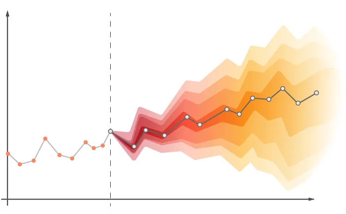
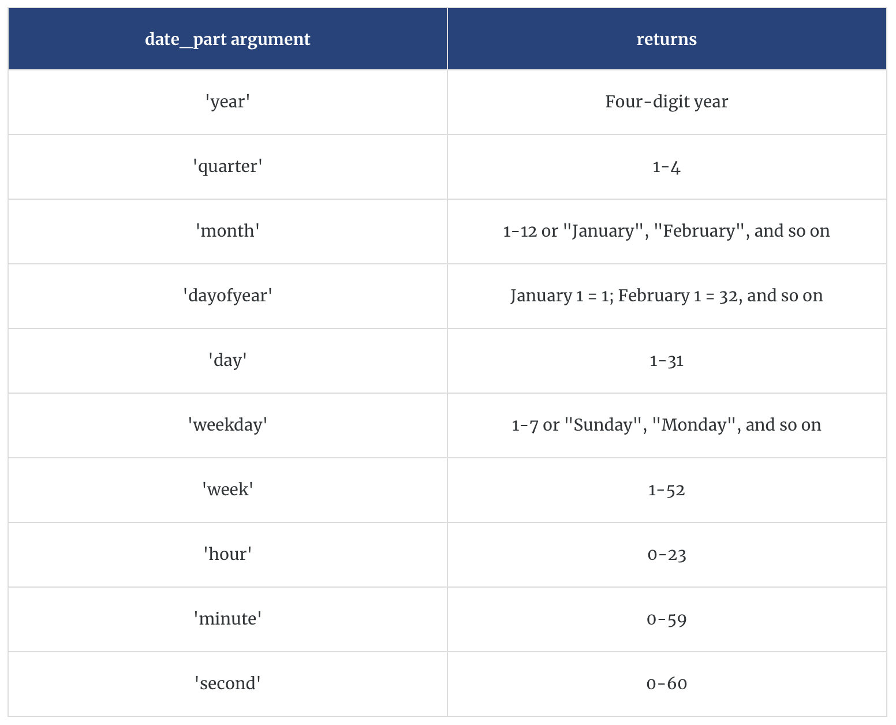

#epoch
as.numeric(as.Date("1970-01-01"))[1] 0#add one day to see how dates are tracked
as.numeric(as.Date("1970-01-02"))[1] 1
This Lab Contributes to Course Objectives: 1, 2, 3, 4, 7, 8
Reading in time series data
Understand how to work with dates
Downloading data via API
Understand date functions
Use date functions in calculated fields
Visualizing time series data
Creating and interpreting trend lines
Visualizing structural breaks
Creating panes to visualize mutiple time series
The overall objective of this lab is to acquaint you with time series data. Time series data is very common but not standardized. Importantly, the notion of a date (and time) is foreign to machines. They treat dates and times as numbers or counts relative to some start of time (usually called the epoch). R uses January 1, 1970 as the epoch. In contrast, MS Excel uses January 1, 1900 as the epoch.1 Prove it to yourself:
#epoch
as.numeric(as.Date("1970-01-01"))[1] 0#add one day to see how dates are tracked
as.numeric(as.Date("1970-01-02"))[1] 1Importing time series data is similar to other types of data. However, one needs to be aware of the date (or date and time). We have collected retail egg price data from the St. Louis FED database called the Federal Reserve Economic Database (FRED). You can download the data here, save it to your machine (and upload it to the server), and read it into R. Or, you can put the hyperlink directly into the read_csv() function. Don’t forget the steps to starting an R script: description of the script (comment), load (install if necessary) needed packages, set working directory.
#From your machine or the server
egg_raw <- read_csv("your_path/APU0000708111.csv")The read_csv() function will try to guess the data type. In this case, it correctly identifies the variable DATE as a date. Check the data type of the variable by looking at the dataframe.
glimpse(egg_raw)There are many instances where you collect data that has a date obvious to humans but not machines. In these cases, you need to give R some guidance. We will use functions from the library called lubridate, designed to help work with dates. Read in a modified version of the data that you can download here. I assigned the dataframe to an object called egg_raw_c to avoid overwriting the existing data.
glimpse(egg_raw_c)Rows: 517
Columns: 2
$ APU0000708111 <dbl> 0.879, 0.774, 0.812, 0.797, 0.737, 0.731, 0.776, 0.907, …
$ CHAR_DATE <chr> "01/01/1980", "02/01/1980", "03/01/1980", "04/01/1980", …We need to tell R how to interpret that date. lubridate contains many functions to help with this. See the documentation for more information and examples.
egg_raw_c <- mutate(egg_raw_c,measure_date=mdy(CHAR_DATE))Alternatively, you can chain commands:
egg_raw_c %>%
mutate(measure_date=mdy(CHAR_DATE)) %>%
glimpse()Rows: 517
Columns: 3
$ APU0000708111 <dbl> 0.879, 0.774, 0.812, 0.797, 0.737, 0.731, 0.776, 0.907, …
$ CHAR_DATE <chr> "01/01/1980", "02/01/1980", "03/01/1980", "04/01/1980", …
$ measure_date <date> 1980-01-01, 1980-02-01, 1980-03-01, 1980-04-01, 1980-05…API stands for Application Programming Interface and they facilitate much of the communication across the modern web.

We can use APIs to query data. FRED maintains an API that can be accessed using the library tidyquant. This library has a large array of finance analysis tools. Right now, we will just use it to access FRED data. tidyquant is installed on the server, but you may need to install it on your own machine (e.g., install.packages("tidyquant")). Load the library. See the documentation for information on how to use the functions. For this exercise, we will use the function tq_get() to access the FRED API. Inspect the help for this particular function to see how to use it. This function can do many things so we need to be specific with some parameters:
First, we need to find the unique identifier from FRED that points to the data we want. In this case, we are going to grab the same data that we downloaded, and the unique identifer happens to be the file name "APU0000708111". Remember the quotes.
Second, the documentation tells us that to access data from FRED we need to set the get parameter to "economic.data"
Third, we can specify the date range with the from and to parameters. Remember to use the YYYY-MM-DD format.
#install.packages("tidyquant")
library(tidyquant,quietly = T)egg_raw_tq <- tq_get(c("APU0000708111"),get = "economic.data",from="1990-01-01",to="2023-02-23")
glimpse(egg_raw_tq)Rows: 398
Columns: 3
$ symbol <chr> "APU0000708111", "APU0000708111", "APU0000708111", "APU00007081…
$ date <date> 1990-01-01, 1990-02-01, 1990-03-01, 1990-04-01, 1990-05-01, 19…
$ price <dbl> 1.223, 1.041, 1.111, 1.092, 0.940, 0.930, 0.899, 0.954, 0.946, …You can download multiple time series at once by using a vector of identifiers. Let’s download the producer price index to compare to the retail price of a dozen eggs. The identifier is WPU017107. Note that I am going to overwrite the existing object egg_raw_tq because I am going to download the retail price series as well as the producer price index.
egg_raw_tq <- tq_get(c("APU0000708111","WPU017107"),get = "economic.data",from="1990-01-01",to="2023-02-23")
glimpse(egg_raw_tq)Rows: 773
Columns: 3
$ symbol <chr> "APU0000708111", "APU0000708111", "APU0000708111", "APU00007081…
$ date <date> 1990-01-01, 1990-02-01, 1990-03-01, 1990-04-01, 1990-05-01, 19…
$ price <dbl> 1.223, 1.041, 1.111, 1.092, 0.940, 0.930, 0.899, 0.954, 0.946, …Notice that there are still 3 columns. The new data is stacked. We can confirm this a few ways:
unique() function to see what values for symbol are in the datasetunique(egg_raw_tq$symbol)[1] "APU0000708111" "WPU017107" table() to see the counts by each valuetable(egg_raw_tq$symbol)
APU0000708111 WPU017107
398 375 Why does the retail series
APU0000708111have more observations?
The time series are currently identified by the variable symbol. These codes are not informative. Let’s replace them with better labels. There is a function in the dplyr package called case_when() designed for this purpose.
egg_out <- egg_raw_tq %>%
mutate(description=case_when(
symbol == "APU0000708111" ~ "Egg Retail Price", #if symbol equals APU0000708111, then replace value with Retail Price
symbol == "WPU017107" ~ "Egg Producer Price"
))Now the dataset is ready for export in .csv format so you can import it into Tableau.
A key attribute of time series data is that we observe values of variables across time. Effective analysis of time series data in Tableau thus begins with understanding date variables and functions. Next, we want to understand what visualizations are most appropriate for time series analysis. Finally we want to understand how to make these visualizations as effective as possible.
Connect to the eggs_out.csv data.
Date functions are Tableau functions that use a date or a date-time field in some way, whether it’s part of the input to perform the calculation or whether the output is a date-time field. Let’s learn about different date functions, their expressions, and their use in Tableau.
You can explore these functions by going to Create calculated field (drop down menu in the data field pane). You can filter on date functions by choosing Date from the library of functions. This will list only the functions that are classified as Date functions.
You can look through these on your own, but I will highlight a few here.
DATEPART (date_part, date, [start_of_week]) returns part of a given date as a number.
For example, DATEPART (‘month’, #January 23, 2021#) = 1. Note the hashtags
DATENAME (date_part, date, [start_of_week]) is similar to DATEPART, but it returns part of a given date as a string.
For example, DATENAME (‘month’, #January 23, 2021#) = January
DATEADD (date_part, increment, date) returns a date in which the specified increment has been added to the given date.
For example, DATEADD (‘day’, 7, #January 23, 2021#) = January 30, 2021
DATEDIFF (date_part, start_date, end_date, [start_of_week]) returns the difference between the two dates using the specified date part.
For example, DATEDIFF (‘day’, #January 23, 2021#, #February 24, 2021#) = 32 and DATEDIFF (‘month’, #January 23, 2021#, #February 24, 2021#) = 1
DATETRUNC (date_part, date, [start_of_week]) truncates or “rounds down” the given date to the level of the specified date_part. This function returns a new date.
For example, when you truncate a date that is in the middle of the month at the month level, this function returns the first day of the month. So DATETRUNC (‘month’, #January 23, 2021#) returns January 1, 2021.
MIN (expression) returns the earliest date across all records, and MIN (expression 1, expression 2) returns the earlier of the two dates for each record.
For example, MIN ([Order Date]) returns the earliest date in the Order Date field.
MAX (expression) returns the latest date across all records, and MAX (expression 1, expression 2) returns the earlier of the two dates for each record.
For example, MAX ([Order Date]) returns the latest date in the Order Date field.
Here are some handy definitions for date_time arguments:

Connect to the carrots_prices.csv data and use the expressions above to do the following:
What types of visualizations are most appropriate for time series data?
Line graphs
Bar charts
Dot plots
Others?
Let’s experiment with creating these visualizations for time series:
Create a line graph that shows the value of carrots over time (by month)
Add markers to your line graph
Change your line graph to a bar graph dot chart
Change your bar graph to a dot plot
Change the size, colors, and opacity of the dots in your dot plot (use the Size and Color icons)
Change the markers in your chart from dots to a different shape (use the drop down menu on the Marks card, then use the Shape icons)
Now let’s experiment with changing what data is shown in your chart:
Change your x-axis to annual
Create one line that shows the average value of the commodity each year, one line that shows the maximum value, and one that shows the minimum value. Can you get all three of these lines in a single pane?
Restrict your date ranges so that your visualization only shows the last 20 years of data (use the Filters card)
Sometimes we might want to view multiple time series in separate figures. There are two ways to do this depending on the structure of your data. Let’s consider wide data first:
Let’s start by bringing in some price data for a few new commodities.
On the Data Source page connect to the following data sources corn_prices.csv and tomatoes_prices.csv
We are going to create a relationship between these data sources and our current working file
With the carrot data in the canvas, drag one of the other data sources next to it in the canvas. Do the same with the other data source.
Now go to a new worksheet, what do you see? What did we just accomplish?
Now that we have all these data sources in a single file and they are structured in a “wide” format, we are going to construct time series plots that let us compare trends in these commodity prices across time.
Open a new worksheet and create a line plot of the prices over time for each commodity
Many functions and tools in Tableau and R are both designed to work with long data, where each row specifies the most granular unit in the data and the variables or fields describe the data elements (e.g., price).
Connect to the egg data that we assembled in R.
Create a time series of the price. How many lines are there? What is the default calculation doing?
Differentiate the price series by dragging Description (a dimension) to the color under Marks. You should see two lines but the scales are off. What’s wrong?
Rescale one of the series to match the other. You can go back to R to do this or do it in Tableau. In either case, you will want to use if/then logic.
https://knowledge.broadcom.com/external/article/57052/how-to-convert-unix-epoch-time-values-in.html#:~:text=Epoch%20%2F%20UNIX%20time%20is%20the,on%20the%2070%20years%20difference.↩︎